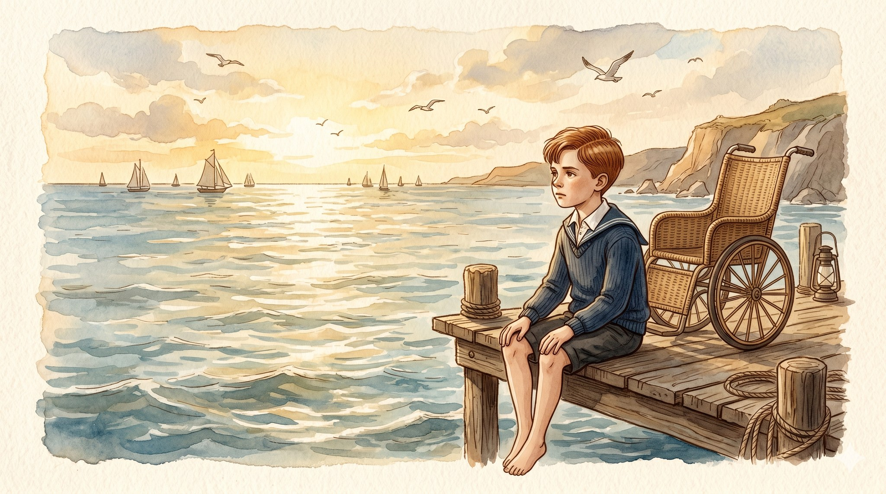
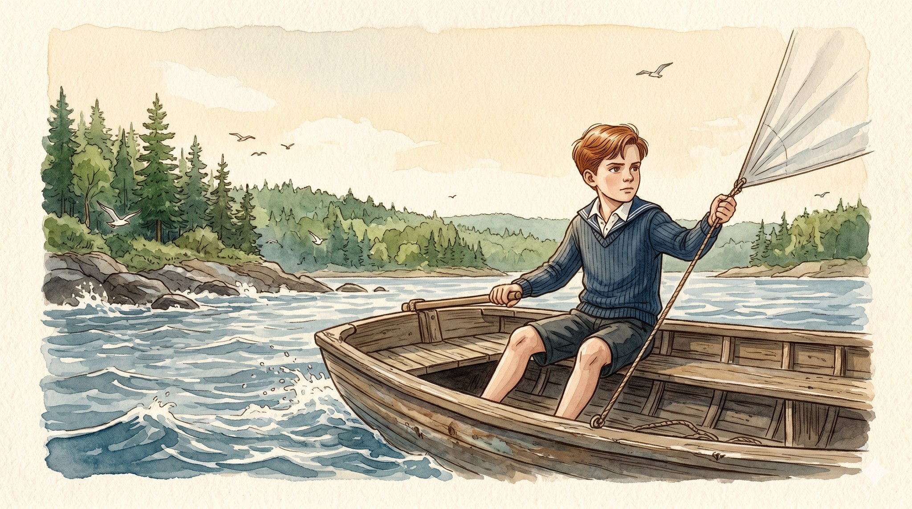
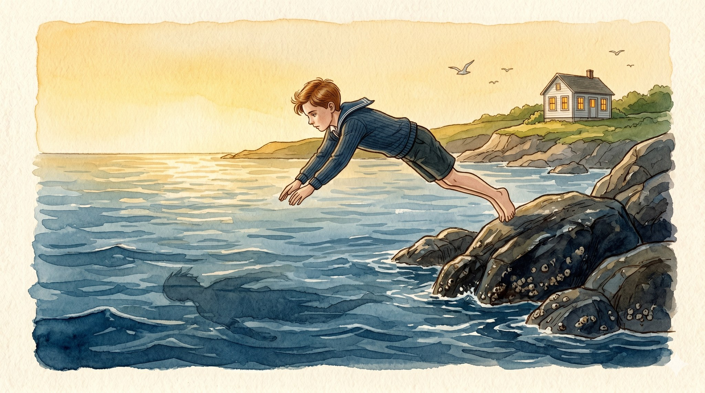
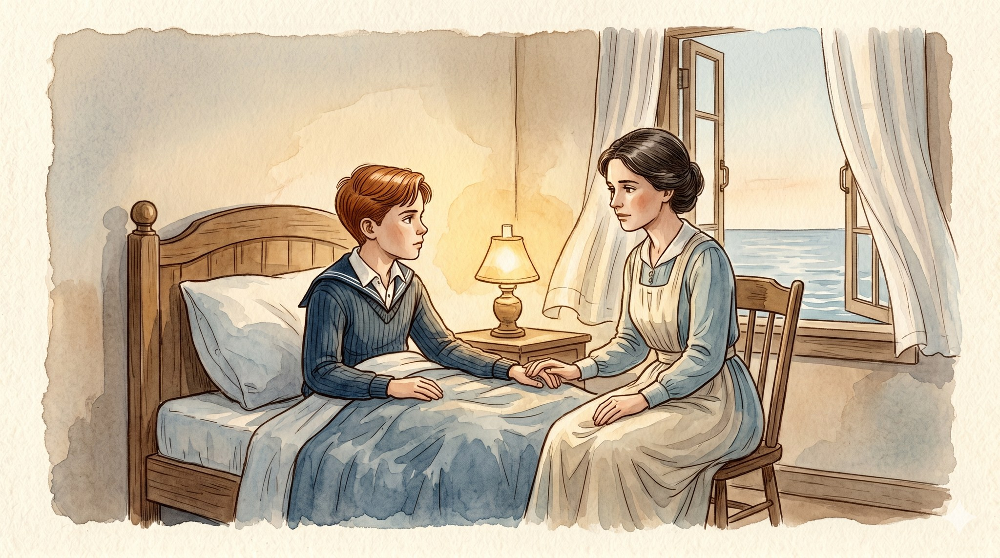
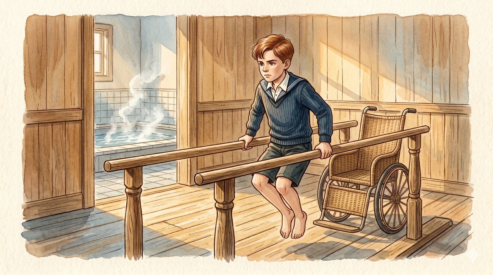
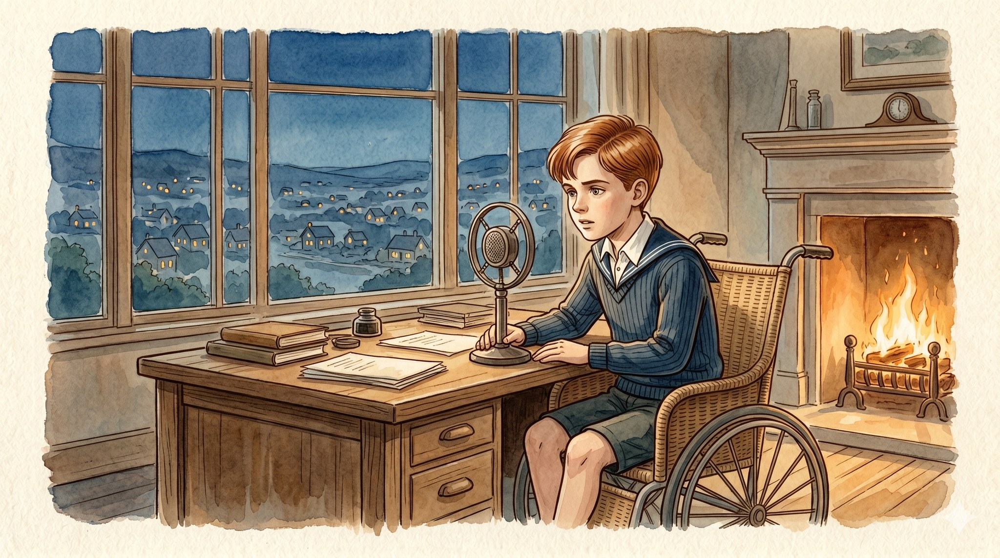

The Boy Who Couldn't Walk

A story for ages 7–10 about how courage means showing up anyway

Franklin loved the ocean.
Every summer he sailed his little boat off a green island called Campobello, pulling the white sail tight against the wind. He swam until his fingers turned white. He climbed the wet rocks barefoot, and his legs were strong and quick and sure.
"You are made of wind and water," his mother told him.
Franklin believed her. It felt true.

One summer, when Franklin was grown, he came back to Campobello. He dove off the dark rocks into the same cold water he had loved his whole life, the afternoon light turning gold around him.
He went to bed tired. A good, ordinary kind of tired.
In the morning, his legs would not wake up.
The sickness was called polio.

Doctors came and went. They tried everything they knew. At last, one of them said the words very gently: "You will not walk again."
Franklin was quiet for a long time. His wife, Eleanor, sat close beside the bed and held his hand. Outside the window, the sea went on sounding the way it always had — far away, calm, patient.
Then Franklin spoke.
"That is one thing," he said. "There are many other things."

So Franklin worked.
Not at running. Not at jumping. Those doors were closed. He worked at the parts of him that still listened — his shoulders, his arms, his chest. Morning after morning, he lifted his whole body between two wooden bars, jaw set, arms shaking. He swam in warm water, where his legs could remember what moving felt like.
He learned to use his wheelchair like a tool. Like a boat, almost. Something to steer.

Years later, when his country was scared and tired, Franklin became its president.
At night he sat in his chair by the fire and spoke into the radio, slow and warm, like a friend at the kitchen table. In little lit houses everywhere, people leaned in to listen. "You are not alone," he told them.
Franklin never walked again.
But every single day, he showed up.
And showing up, it turned out, was the bravest thing of all.